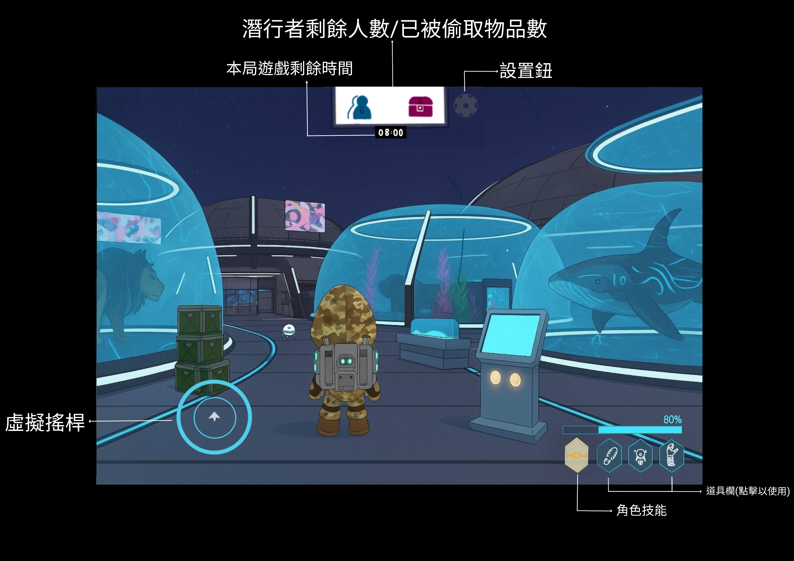
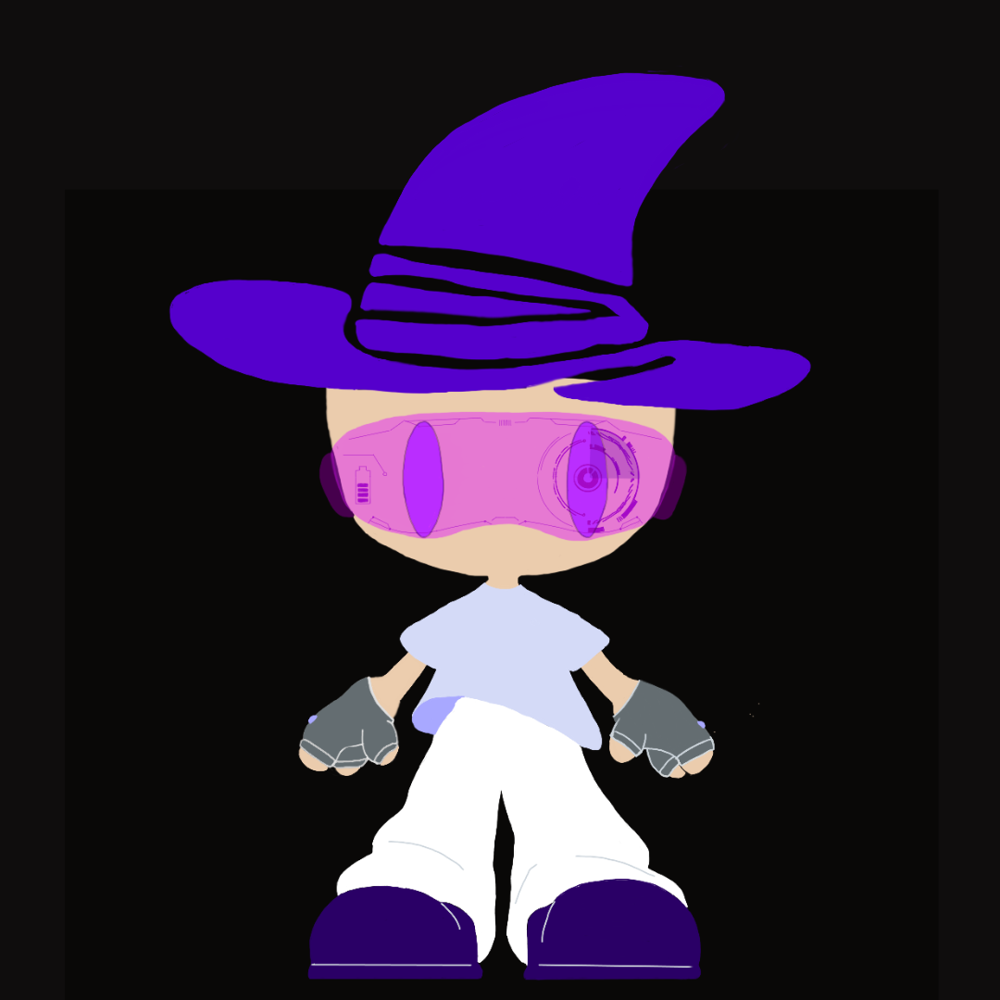
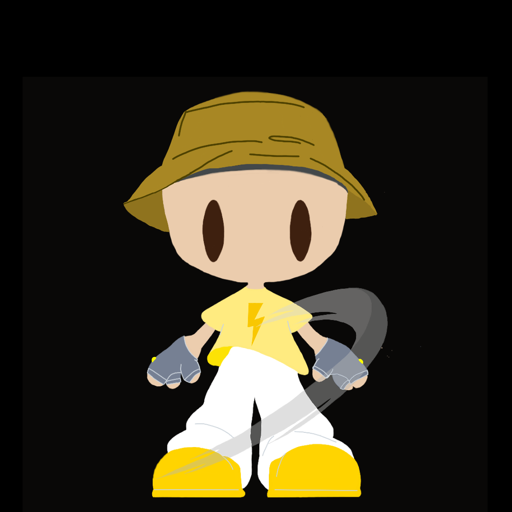
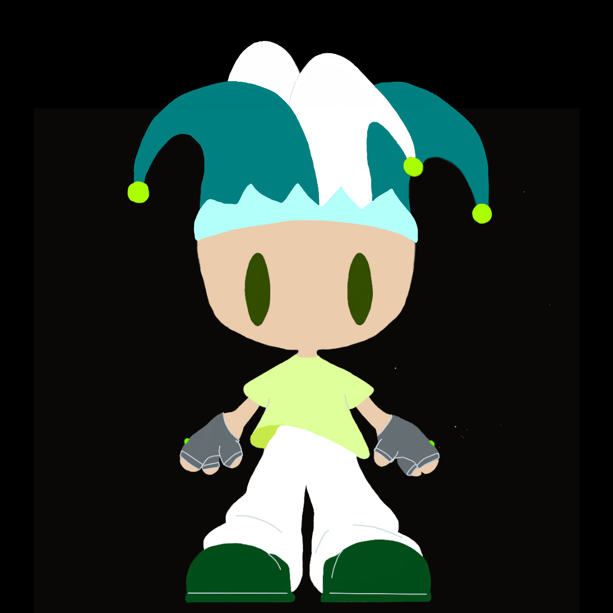
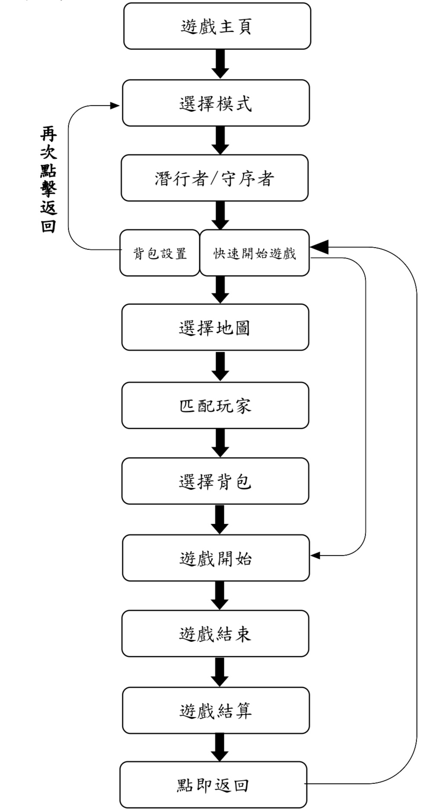

| 首頁 | 個人介紹 | 網站練習 | 個人企劃書 | 團體企劃書 |
| 鬼影追蹤 |
| 壹、發想 | 貳、遊戲類型 | 參、故事 | 肆、遊戲流程 | 伍、劇情 | 陸、角色 |
| 柒、道具 | 捌、流程圖 | 玖、市場分析 | 拾、參考遊戲 | 企劃書(PDF) | 簡報(PPT) |
| 壹、 發想 |
| 一、 製作動機 |
|
在近年團隊對抗手遊非常受歡迎，這類型遊戲能帶來更多變化與團隊合作，但目前大多玩家都只能體驗到其中一方陣營，因此我將追捕與偷竊兩方都設計成了玩家可自由選擇與切換陣營，發展出較為新鮮的玩法。 |
| 二、 遊戲目的 |
| •娛樂與解壓：透過短時間一局的遊戲設計，讓玩家隨時能玩，紓解壓力。 |
| •策略與合作：培養玩家的臨場反應、規劃路線與團隊合作能力。 |
| •挑戰與成就感：玩家能透過完成任務、收集物品與角色獲得成就感。 |
| •社交互動：支援多人模式，增加玩家間的交流與互動。 |
|
三、
發想內容 |
|
靈感來自於日常生活，常常在現實中，我們會幻想「如果自己能神不知鬼不覺地完成一件事，會不會很酷？」比如偷偷拿零食不被爸媽發現、或是班上玩鬼抓人時努力躲藏。這些小小的刺激和樂趣，啟發我把「偷東西與追捕」轉換成遊戲主題。
因此，我決定打造一款以「小偷
vs
搜索」為核心的遊戲，讓大家都能體驗「潛行的緊張」與「追捕的快感」，就像小時候玩躲貓貓，但升級成一個更刺激、更完整的世界。 |
|
貳、
遊戲類型 |
| •非對稱角色：不同陣營的玩法與技能不同，遊戲策略多元。 |
| •多人競技：玩家之間即時互動、追逐或合作完成任務。 |
| •手遊：隨時隨地皆可玩。 |
| •短局快節奏：每局大約 10 分鐘，方便碎片化遊玩。 |
| 在這個世界上，光明與黑暗從未如此接近。 隨著科技與文明的飛速發展，人類的城市日漸壯大，但也讓貪婪與慾望在陰影中滋長。 一支名為 「潛行者」 的秘密組織悄然崛起。他們是偽裝的高手、竊取的專家，能化身為雕像、販售機、甚至一張長椅，只為在毫無察覺之下奪走任務清單上的珍稀物品——有的是價值連城的寶藏，有的是足以改變世界的機密資料。 與之對抗的，則是 「守序者」 一支誓言維護秩序與正義的特別行動隊。他們遍布於城市的每個角落，時刻監視、追蹤並逮捕任何可疑的行動。對他們而言，每一次阻止竊盜的成功，不只是保護財產，更是守住人類社會的安定與信任。 雙方的對抗早已超越了單純的「偷與抓」—— 這是一場智慧、膽量與耐心的博弈。 你，將站在哪一邊？ 是潛入陰影、在守序者的監視下完成史上最危險的竊盜？ 還是挺身而出，化身正義之眼，讓所有潛行者無所遁形？ 無論選擇哪一方—— 這場「暗影與秩序」的對決，現在開始。 |
| 肆、遊戲流程 |
| 一、 操作方式 |
| •移動方式 | 玩家透過虛擬搖桿控制角色行動方向與移動速度，能自由探索地圖場景。 |
| •道具 | a.每位角色可裝備 3 種道具，進入遊戲前可自由選擇搭配。 b.遊戲中點擊道具欄位即可使用道具。 c.每個道具僅可使用一次，請謹慎決定使用時機。 |
| •潛行者 | a.主要目標：偽裝、潛入並成功盜取任務清單上的物品。 b.拾取物品：接近任務目標物品後，螢幕上會出現互動圖示，點擊圖示即可開始拾取與竊取動作。 |
| •守序者 | a.主要目標：巡邏、監視並阻止潛行者竊盜行動。 b.逮捕方式：搜索並接近潛行者，使其進入自己逮捕範圍即會顯示手銬外觀的互動圖示，點擊並上銬，即視為逮捕完成。 |
| 二、 玩法介紹 |
| •陣營選擇（模式） | 玩家可自由選擇潛行者或守序者作為遊玩陣營。選擇陣營後，進入角色設定與道具裝備階段，每位角色可裝備 3 種道具，道具在每局遊戲中只能使用1次。每個玩家在兩種模式中皆有三個背包欄，可在匹配後選擇本局使用的背包；一旦遊戲開始，當局背包不可更換。 |
| •遊戲配置 | 遊戲提供五大挑戰地圖，玩家選擇地圖與遊玩模式後進行匹配，一般匹配模式會有6 位潛行者與 6
位守序者，此外我們也提供2對2與4對4等的對戰組合模式，可以與好友連線遊玩，也可自己匹配與遊戲中的線上玩家或人機組隊與對抗，形成緊張刺激的多人對抗場景。勝利條件如下： a.潛行者（達成一種即可） →在遊戲時間 10 分鐘內，竊取任務清單上的 12 件目標物品。 →時間結束時，竊取物品數達 8 件以上，且至少有一名潛行者仍生存。 b.守序者（達成一種即可） →在遊戲時間 10 分鐘內，成功逮捕所有潛行者。 →時間結束時，阻止潛行者盜取超過8件以上物品。 |
| •遊戲介面 |
圖例:以守序者獵守視角呈現，此場景為動物園。  |
|
| 一、 潛行者--「真相，才是我們的目標。」 |
| 在人們眼中，我們是不法之徒，是夜裡的影子，是讓全球安全組織頭疼的「國際竊盜組織」。 但真相並非如此簡單。 那些被偷走的「物品」並不只是珠寶、機密文件或稀有樣本——它們背後藏著足以改變世界的秘密。有人用權力掩蓋真相，有人用金錢壟斷知識，而我們，正是選擇揭開這一切謊言的人。 「若秩序是用謊言築成的牢籠，那麼我們的偷竊，便是打破鎖鏈的第一步。」 |
| 我們的使命是守護秩序與穩定，確保那些可能引發戰爭、經濟崩潰或社會混亂的物品不會落入錯誤之手。 潛行者自稱是「揭露真相」的英雄，但在我們眼裡，他們的行為只會讓世界陷入更深的危機。他們潛入各地的禁區、竊取被嚴密保護的機密，無視國際法與人命的後果。 我們不在乎他們的動機是什麼——只要他們的行動會危及世界的安穩，那我們就會出手。 「若正義需要武裝，若和平需要守護，那麼我們將成為這場無形戰爭的最後防線。」 |
| 陸、角色 |
| 一、潛行者 |
| •目標：潛入地圖、偷取指定物品、在守序者追捕下存活 •數量： 6人 •種類： a.幻影 特點：偽裝大師，類似間諜，起動後外觀與守序者相同 技能範例：短暫更換為守序者外觀 b.迅影 特點：身手矯捷，專精快速移動與逃脫 技能範例：短時間加速、翻滾閃避 c.詭影 特點：擅長干擾與迷惑追捕者 技能範例：分身 |
|
 |
 |
 |
| 二、守序者 |
| •目標：巡邏地圖、找到並逮捕小偷、阻止物品被竊取 •數量： 6人 •種類： a.獵守 特點：偵查高手，能發現細微痕跡 技能範例：顯示腳印、揭穿偽裝 b.衛守 特點：防守與陷阱專家 技能範例：放置電擊網使物品暫時無法被偷走 c.制守 特點：擅長近身追捕與壓制 技能範例：使附近潛行者短暫定身
|
| 柒、道具 |
| 一、潛行者 |
| •地圖碎片：提示指定物品位置。 |
| •復活水：可在被逮捕後復活。 |
| •傳送裝置：可迅速傳送到隨機地點。 |
| •隱形墨水：在物品或地面留下短暫假跡，迷惑守序者。 |
| •護盾：穿戴期間守序者無法對其進行逮捕。 |
| •陷阱套件：在地面放置簡單的機關，阻擋守序者路線。 |
| •冷凍炸彈：接近炸彈的守序者無法動彈。 |
| •干擾器：干擾敵方地圖訊號。 |
| •感應器：可探測附近守序者位置。 |
| •鐘錶：可快進或加時30秒。 |
| 二、守序者 |
| •探測儀：偵測附近潛行者位置。 |
| •監控：放置後自動監控一定範圍，提示潛行者位置。 |
| •封鎖欄杆：暫時封閉小偷可通行部分路徑。 |
| •警示標誌：放置後，潛行者靠近會減慢移動速度。 |
| •音波探測器：可聽到範圍內小偷移動的聲音。 |
| •追蹤膠印：留在地面，若潛行者踩過會留下痕跡給守序者。 |
| •煙霧探測器：可在特定區域偵測煙霧道具的使用，提示守序者位置。 |
| •警戒哨兵：放置後，在指定區域可幫助逮捕潛行者。 |
| •伸縮手臂：加長可逮捕潛行者距離。 |
| •神秘按鈕：按下可在時間內使所有潛行者道具無效。 |
| 捌、流程圖 |

| 玖、市場分析 |
| 一、目標市場 |
| •玩家族群 | a.戰略型玩家:喜歡角色搭配與任務完成條件帶來的策略變化。 b.社交型玩家:喜歡與朋友組隊對抗、合作享受雙方互相博弈的樂趣。 c.動作類愛好者:對刺激對抗主題感興趣的玩家。 |
| •年齡層: | 15-35歲，以高中、大學生、上班族為主。 |
| •市場機會 | a.非對稱競技與團隊對抗類遊戲是近年遊戲髮展類型的趨勢。 b.玩家偏好可反覆遊玩、有多變戰略選擇的遊戲。 c.目前對於「潛行、追捕」這類遊戲的開發還不算常見，市場競爭尚未飽和。 |
| 二、SWOT分析 |
| •S優勢 | 雙陣營非對稱玩法新鮮、策略性高，豐富的地圖、角色與技能組合提升多樣性、世界觀完整、代入感強，且玩家沉浸度高，遊戲節奏明快，適合行動裝置玩家。 |
| •W劣勢 | 新手初期可能需要較長學習時間（技能與任務機制複雜），平衡性調整難度高，且若一方過強會影響玩家留存，遊戲需要穩定網路與多人同時在線，匹配系統需完善。 |
| •O機會 | 市面上同類題材競品較少，有機會快速搶占市場，可延伸出角色造型、劇情活動、PvE模式等，有潛力發展電競或實況對戰內容，吸引社群關注。 |
| •T威脅 | 若無法持續更新內容，玩家易流失，遊戲市場競爭激烈，需建立明確品牌定位，遊戲平衡若未達標，容易引發負評並影響口碑。 |
| 拾、參考遊戲 |
|
|
| •H.I.D.E |
| •超級大搜尋 |
| 返回 |